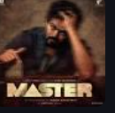

popular songs of Anirudh
| Year | Song | Language |
|---|---|---|
| 2012 | why this kolaveri di | Tamil |
| 2013 | ethir neechal | Tamil |
| 2013 | chennai city gangsta | Tamil |
| 2019 | gag-u-leader | Telugu |
| 2020 | vaathi coming | Tamil |
| 2021 | rendu kaadal | Tamil |
| 2022 | dippam dippam | Tamil |
| 2023 | hukum | Telugu |
| 2024 | manasillayo | Telugu |
| 2025 | sawadeeeka | Tamil |
Albums
|
vettayan 2024 |

jailer 2023 |

leo 2023 |

Jawan 2023 |

Beast 2022 |
Vikram 2022 |
Gang Leader 2019 |

Master 2020 |